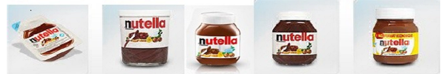

8.1 Launch Material:
The words and language that accompany our launch communicate the overall tone, sincerity and value as a business. While colors and branding can be less conscious and more subversive, words will directly resonate with our audience and leave a lasting impression.Also as effective our launch would be more it will be important for customers and gaining momentum with our product in the market.We are going to launch our product during a window of time with the most opportunity. This means that our product will be launched when there is the most need for its features i.e, during winters when many people resist to cook breakfast.So,the launch date will be on 5th February 2021.Our promotional campaign will start on January 1st,so this much time would be enough to aware the people and would create eagerness which will boost the sale and success rate of our new product Nutella Hazelnut Spread.

Fig7: Types of packaging in which Nutella Spread comes
8.2 Launch Budget:
The budget would be used in advertising through various platforms like radio,tv,print and media along with investing in transportation,grocery stores and in offices which will deduce the variable and fixed cost accordingly.Budget is based on investing 3 million pound.Sales will be based on population in the targeted segment.As advertising will start before launch ,so this budget will spend accordingly.This launch budget will identifies the available capital, estimates spending, and helps in predicting revenue.Overall will helps to predict cash flow, identify functional areas that need improvement, and running operations smoothly.The budget will help plan business activities and can act as a yardstick for setting up financial goals.This budget gives a brief description to understand how our business is performing.It can help us tackle both short-term obstacles and long-term planning.